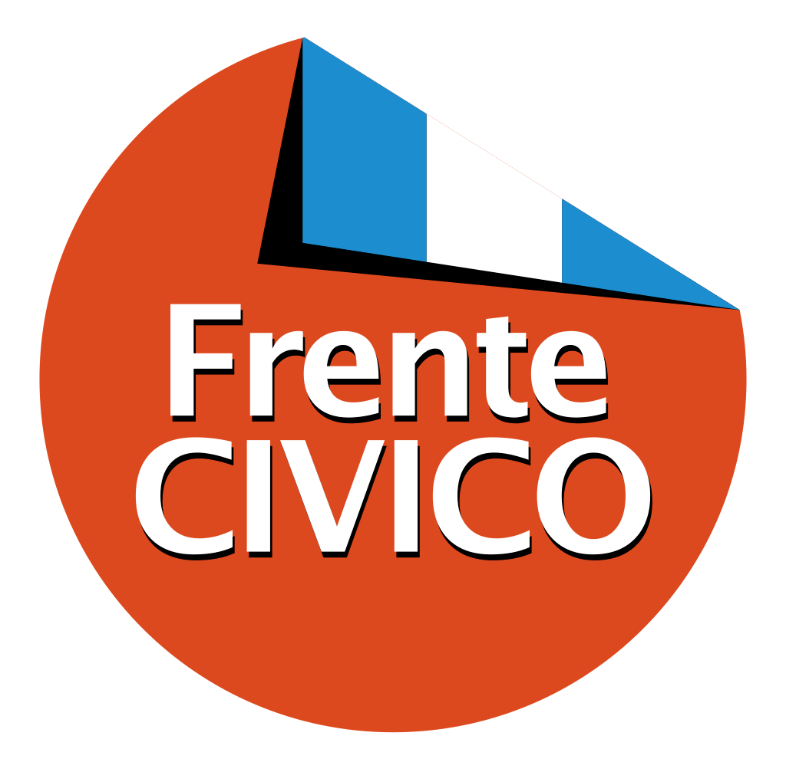

¿Quien Soy?
Soy Martín Juez, abogado y dirigente político, comprometido con transformar Córdoba en una ciudad moderna, segura y libre. Para mí, la política no es un privilegio, sino una responsabilidad, y estoy dispuesto a confrontar a quien sea necesario por el bienestar de cada cordobés. Crecí viendo a mi padre, Luis Juez, luchar contra la corrupción, y entendí que no se puede ser indiferente cuando la injusticia se vuelve costumbre. Soy abogado egresado de la Universidad Nacional de Córdoba, con especialización en España, pero mi formación real fue en la calle, escuchando a la gente. Como presidente de la Juventud del Frente Cívico, construimos la oposición juvenil más fuerte de la provincia, y luego, como concejal, trabajé sin descanso por una Córdoba mejor. Mi visión es una ciudad eficiente, con servicios de calidad, impuestos bajos y un Estado que deje de despilfarrar recursos. No acepto que salir a la calle sea un peligro o que los cordobeses paguen tasas abusivas mientras la política se llena de privilegios. Presento proyectos para mejorar la vida de los ciudadanos y denuncio cada acto de corrupción que encuentro. Creo en una política cercana, por eso creé "Oficina Abierta", un espacio donde los vecinos traen sus inquietudes. También recorro los barrios, expongo lo que el poder esconde y sigo peleando por una Córdoba digna. A los jóvenes les digo: sé que muchos desconfían de la política, pero este sistema que nos quiere callados se terminó. Es nuestra generación la que debe desafiar la vieja política y cambiar el rumbo de la ciudad. Si estás leyendo esto, es porque todavía creés que podemos hacer la diferencia. Y te aseguro que no pienso rendirme.
Barrios visitados
Proyectos presentados
Personas beneficiadas
Córdoba del Futuro
Empowerment Zone
Innovación y emprendimiento.
Córdoba hacia arriba
Desarrollo urbano sostenible.
Movilidad Digital
Transporte inteligente.
Salud Digital
Tecnología en la medicina.
📌 Córdoba Invisible
Hay una Córdoba que el peronismo esconde. Una ciudad donde el abandono es total y la miseria es la única política de Estado. Barrios enteros sin luz, sin cloacas, sin transporte y sin seguridad.
Zonas donde los colectivos no entran porque las calles están destruidas o porque los choferes tienen miedo. Donde las ambulancias no llegan y los vecinos no tienen ni un centro de salud en condiciones. Lugares donde el narcotráfico manda, la violencia es cotidiana y el Estado hace décadas que desapareció.
📍 Esto no es exageración. Es la realidad que vamos a mostrar.
En Córdoba Invisible, voy a meterme en los barrios que nadie quiere ver. Con el testimonio de los vecinos, recorriendo las calles, documentando cada abandono y cada injusticia.


📢 Porque el primer paso para cambiar esta realidad es mostrarla.
Descubrí lo que no quieren que veasConcejo Deliberante
Soy Concejal y Vicepresidente Tercero del Concejo Deliberante
Mi trabajo es claro: controlar al oficialismo, frenar abusos y presentar proyectos que realmente mejoren la ciudad. Para eso me votaron los cordobeses.
📢 Las puertas están abiertas. Cada cordobés puede sumar su voz y ser parte del cambio. ¡Trabajemos juntos por una Córdoba mejor!
Proyectos
Ir a ProyectosOficina Abierta
Ir a Oficina AbiertaArticulo 111
Ir a Articulo 111Pedido de Informes
Ir a Pedido de Informes
Frente Cívico
La única oposición real al peronismo en Córdoba.
Hace 25 años que gobiernan con corrupción, abandono e inseguridad. Córdoba hoy es tierra de nadie. Mientras ellos se enriquecen con sobreprecios y negociados, los barrios están destruidos, las calles sin luz y los vecinos con miedo de salir a la calle. El Frente Cívico nació para frenar este saqueo. No hablamos, actuamos. Frenamos la compra de uniformes de la Guardia Urbana con sobreprecios a una empresa amiga y logramos que el peronismo compre 600 autos en vez de 400, ahorrando millones a los cordobeses. Cada acto de corrupción que encontramos, lo denunciamos y lo frenamos. Hoy, como Presidente de Junta Capital, trabajo todos los días en los barrios, renovando la forma de hacer política con una estructura dinámica, real y cercana a la gente. El Frente Cívico no tiene solo una sede, tiene decenas de locales en casas y garajes que los vecinos abren para que esta lucha siga creciendo.
¿Cómo podés sumarte?
- Militá por una Córdoba distinta.
- Usá las herramientas que brindamos:
- Centro de Atención Ciudadana
- Cursos de oficios y alfabetización
- Apoyo escolar y acompañamiento a familias
No nos financian empresarios ni nos compran con pauta publicitaria.
Dejanos tus datos y sumate a nuestra lucha
¿De qué seccional sos?
Estudio Jurídico
Desde siempre, tuve una vocación clara: defender la justicia y enfrentar la impunidad.
Abogado penalista graduado con honores en la Universidad Nacional de Córdoba, con una sólida formación en:
- Maestría en Derecho Procesal.
- Especialización en Teoría del Delito y Responsabilidad Penal de Personas Jurídicas.
- Diplomatura en Derecho Penal.
Hoy formo parte del estudio jurídico Juez Andrada y Asociados, donde trabajo tanto con personas como con empresas y organizaciones, logrando una alta tasa de éxito.
Casos de Éxito


Encontranos en
📍 Dirección: [Dirección del Estudio]
Contactanos
📢 Porque la justicia no es solo un principio, es una convicción.
¡Hola! ¿Cómo podemos ayudarte?